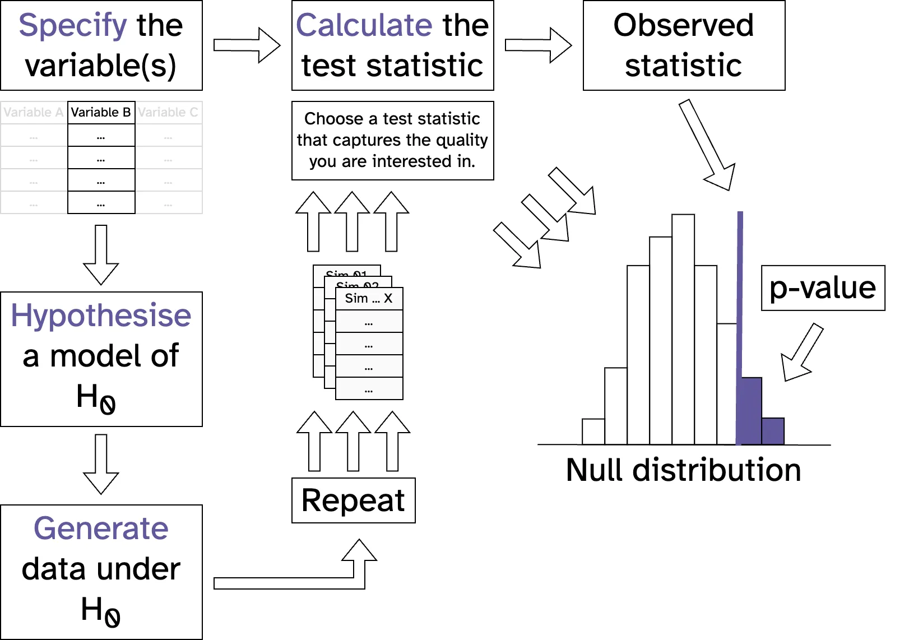

Get RStudio setup
Each time you start a new exercise, you should:
- Make a new folder in your course folder for the exercise (e.g.
biob11/exercise_5)
- Open RStudio
- If you haven’t closed RStudio since the last exercise, I recommend you close it and then re-open it. If it asks if you want to save your R Session data, choose no.
- Set your working directory by going to Session -> Set working directory -> Choose directory, then navigate to the folder you just made for this exercise.
Instructions
For each dataset below:
- Create a new Rmarkdown document (File -> New file -> R markdown..). Give it a clear title. Delete any of the demo text not in the YAML frontmatter.
- Download the dataset and move it into your working directory folder.
- Load the
tidyverse and infer packages.
- Import the dataset using
read_csv().
- Use Headings so that your document is clear and easy to follow.
- Write your answers to the questions as text in the document.
Between datasets, you should clear your R environment. The easiest way to do that is to restart R by going to Session -> Restart R. You can also use the broom icon above your environment tab, or use the command rm(list = ls()).
You will need to use past exercies, slides, the course book and the infer webpage for help with implementing your ideas. Try to use them first before asking for help. But if you’re stuck, then please ask!

Species co-occurences in benthic communities
Co-occurrence patterns of species across a landscape may arise due to shared habitat preferences, dispersal patterns, community interactions (e.g. facilitation, competition) or the interaction of these processes. To understand if communities differ in species composition and/or abundance between open sand and sea grass habitats in a shallow bay, researchers conducted snorkling transects and recorded the number of 6 important benthic species.
The dataset the researchers collected can be found as a .csv file on GitHub.
Ecosystem health
The relative composition of certain species can be a good indicator of ecosystem health. A healthy sea grass habitat should have the following species composition:
| Aglaophamus_macroura |
0.12 |
| Cominella_glandiformis |
0.30 |
| Magelona_dakini |
0.18 |
| Notoacmea_scapha |
0.11 |
| Nucula_hartvigiana |
0.20 |
| Paracalliope_novizealandiae |
0.09 |
Does the species composition of the sea grass habitat in the dataset suggest the ecosystem is healthy?
- Produce a figure using
ggplot() using the data that reflects the research question.
- Use a null hypothesis test to address each research question.
- State a null and alternative hypotheses.
- State the sample statistic you will calculate, and why this addresses the research question.
- Explain how you will derive a null distribution, and why this is valid for the research question.
- Calculate the test statistic, and compare it with the null distribution to calculate a p-value.
- Write a conclusion statement that directly addresses the research questions, and references key results from your analysis.
Questions
Think about Gregor Mendel’s peas.
Code
You’ll need to do some filtering of the dataset first.
See the example in this infer article, or in the slides from yesterday.
Cultural worms
Let’s suppose that the species Magelona dakini holds special cultural value. The researchers see that in the data it looks like it is associated with the sea grass habitat, and think that this could be helpful to convince decision makers about the importance of conserving the sea grass habitat. Is Magelona dakini significantly associated with sea grass habitats?
- Produce a figure using
ggplot() using the data that reflects the research question.
- Use a null hypothesis test to address each research question.
- State a null and alternative hypotheses.
- State the sample statistic you will calculate, and why this addresses the research question.
- Explain how you will derive a null distribution, and why this is valid for the research question.
- Calculate the test statistic, and compare it with the null distribution to calculate a p-value.
- Write a conclusion statement that directly addresses the research questions, and references key results from your analysis.
Questions
If Magelona dakini really didn’t have a preference between the habitats, what proportion of the time would we expect to find it in each?
Code
You’ll need to do some filtering of the dataset first.
See the code in this infer example.
Effect of fertilizer application on crop growth
Researchers at Lund University want to understand the effectiveness of three fertilizers on promoting crop growth. To do that, they construct experimental arrays of plant pots. The control pots were filled with a standardised soil mixture. The treatment plots were filled with the same standardised soil mixture plus the addition of the fertilizer. Already germinated seedlings were randomly assigned to pots and planted. Plants were kept in the greenhouses, and watered regularly.
After 30 days, the researchers used a knife to cut all of the plant’s biomass that was above ground. Using an oven, they dried each plant for 24 hours before recording the mass in grams using a balance.
The results of the experiment are stored in a .csv file on GitHub.
Did anything happen?
Did the fertilizers have any effect on the growth of the crops?
- Produce a figure using
ggplot() using the data that reflects the research question.
- Use a null hypothesis test to address each research question.
- State a null and alternative hypotheses.
- State the sample statistic you will calculate, and why this addresses the research question.
- Explain how you will derive a null distribution, and why this is valid for the research question.
- Calculate the test statistic, and compare it with the null distribution to calculate a p-value.
- Write a conclusion statement that directly addresses the research questions, and references key results from your analysis.
Questions
While the fertilizer could have affected the crops in a number of ways, we usually want bigger crops on average, so we need some way to see if the average mass has increased in any of the treatments.
If you’re still stuck, have a look at the lecture slides from yesterday, in the section titled “Other helpful sample statistics”.
A clear winner?
You might suspect that one particular treatment group is causing your ANOVA result. As the ANOVA does not let you say which group(s) are different from the global mean, there is often the need for a post-hoc (Latin for “after this”) analysis. Post-hoc analyses are tests you do after you have seen your data (and often some results). It is important to differentiate this analysis from your original one, as you did not plan to do it and the more tests you do, the more likely you are to find a low p-value by chance alone.
If you suspect that one treatment is in fact different, perform a test to see if there is a difference in crop growth using just the control and that treatment.
- Produce a figure using
ggplot() using the data that reflects the research question.
- Use a null hypothesis test to address each research question.
- State a null and alternative hypotheses.
- State the sample statistic you will calculate, and why this addresses the research question.
- Explain how you will derive a null distribution, and why this is valid for the research question.
- Calculate the test statistic, and compare it with the null distribution to calculate a p-value.
- Write a conclusion statement that directly addresses the research questions, and references key results from your analysis.
Questions
The graph you made at the start will give you a clue as to which treatment to look at, but you could also test all treatments against the control, one by one.
The statistic to use is one we’ve used before, so not a new one from yesterday’s lecture.
Code
You’ll need to do some filtering of the dataset first.
See the code in this infer example.
Or a resounding failure?
One of the researchers who carried out the experiment notices that the thermostat used to set the greenhouse temperature is faulty. They hypothesis that this might have affected the experiments results. To check, they propose a test:
In previous years the researchers have carried out similar experiment. They know that the control group usually has a median above ground dry mass after 30 days of 13.2 grams. If this year’s experiment (the dataset) differs significantly from this, then they will have to discard the results and repeat it.
What should they do?
- Produce a figure using
ggplot() using the data that reflects the research question.
- Use a null hypothesis test to address each research question.
- State a null and alternative hypotheses.
- State the sample statistic you will calculate, and why this addresses the research question.
- Explain how you will derive a null distribution, and why this is valid for the research question.
- Calculate the test statistic, and compare it with the null distribution to calculate a p-value.
- Write a conclusion statement that directly addresses the research questions, and references key results from your analysis.
Questions
The statistic to use is one we’ve used before, but the full method of deriving a null distribution is a new one. It uses bootstrap, but in a weird way:
- Recenter sample so that its median is equal to the hypothesised med (which in this case is 13.2 g).
- Generate replicate bootstrap samples from this recentered sample.
Code
You’ll need to do some filtering of the dataset first.
See the code in this infer example.
See also this GitHub issue, which might help explain it more.
Submit your work
Once you’re done, knit both your documents to HTML files.
They will have been saved next to wherever your .Rmd file is saved.
Upload both your .html files as your assignment for this exercise in Canvas.